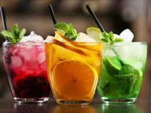
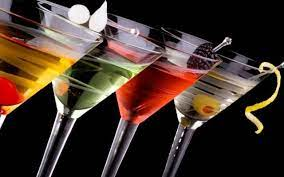
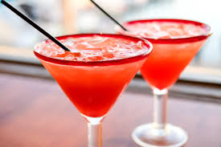
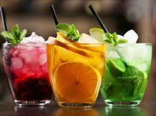
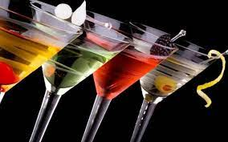
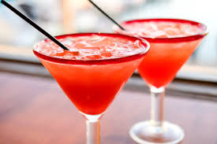

Cartagena se une al día mundial del bartender con un show de cócteles
La celebración se realizará en el bar Botika ubicado en el hotel Santa Clara este viernes 24 de febrero


 





El origen del cóctel se remonta al siglo XIX donde en una farmacia de nueva Orleans un farmacéutico, llamado Antonio Peychaud, tenía como costumbre ofrecerles a sus amigos una bebidas preparadas en una huevera (coquetier) siguiendo una receta de sus islas natales a base de amargo, coñac, azúcar y especies.
Es bien sabido que el origen de las bebidas alcohólicas también hay que buscarlo en las farmacias, como ocurrió con el antiguo aqua vitae o agua de vida que luego derivo en la palabra “aguardiente” el cual más que un placer para el paladar era un remedio medicinal. Las infusiones estomacales, las bebidas a base de quina, y otros estimulantes.
La celebración se realizará en el bar Botika ubicado en el hotel Santa Clara este viernes 24 de febrero
Uno de los jurados más destacados del World Class -competencia que escoge al mejor bar tender del país- que tendrá su final hoy en Bogotá, es el embajador mundial de marca de Johnnie Walker, Tim Philips.

La colombiana se convirtió en la mejor bartender del país

La mezcla de bebidas, con o sin alcohol, e ingredientes de todo tipo como frutas, zumos, azúcar o cremas da origen a cócteles para todos los gustos.
A pesar de que existe toda una cultura coctelera, con bartenders que hacen malabares para mezclar los líquidos y que miden al milímetro cada elemento que incorporan, hacerlos en casa no tiene ninguna complicación.
A continuación vamos a recopilar una lista de los cócteles más famosos de todo el mundo y terminaremos con una recomendación de la marca Liebherr: el clericot de melocotón, ideal para los amantes del vino blanco y los sabores afrutados.